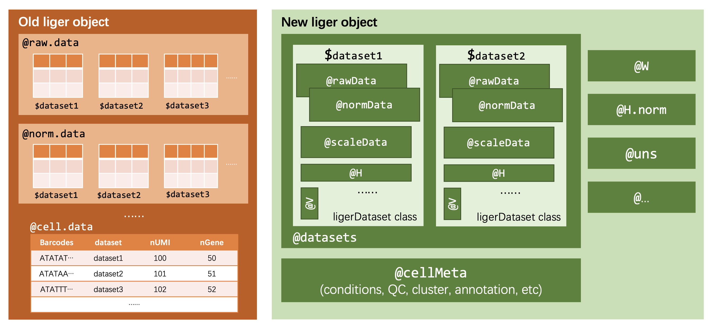

Interact with A Liger Object
Yichen Wang
2023-11-06
Source:vignettes/articles/liger_object.Rmd
liger_object.RmdStructure
Starting from rliger 2.0.0, we introduced a newly designed structure for the main data container object class. The figure below brings a overall idea about the design.

On the left hand side of the figure, we briefly illustrate how the old structure was like. It has slots for data at each processing stage, and each slot is a named list object containing matrices.
In the new version, on the right side, we first introduce another new class, ligerDataset, to serve as a container for all matrices belonging to the same specific dataset. In this way, we have easy and safe control on data matching thanks to a number of object oriented accessor methods and validity checks. As for the liger class, there are some main differences:
- Feature (gene expression) matrices are now wrapped in ligerDataset
objects, and all put in the
datasets(obj)slot. Click here for how to access the raw counts, normalized counts, scaled data. - Cell metadata including dataset belonging, study design conditions,
quality control (QC) metrics are now stored in slot
cellMeta(obj). Meanwhile, we moved cluster labeling result also to this slot, in order to have multiple cluster variables existing at the same time. Additionally, by introducingS4Vectors::DataFrameclass for the metadata for flexibility and tidy display. Click here for how to access cell metadata. - Dimensionality reductions are now expanded to a list of
low-dimensional representation (e.g. UMAP, t-SNE) in slot
dimReds(obj). Click here for how to access dimensionality reductions. - Variable features identified are now stored in
varFeatures(obj), with no structural change. - A new slot
@unsis added for storing miscellaneous unstructured information, including default setting for cluster labeling and dimension reduction, for faster visualization calls. - We also added the feature to record the commands applied to the
liger object and allow retrieving the records with
commands(obj). See more about liger command recording and retrieving.
We demonstrate examples below with example dataset “pbmc”, which is a minimal subset from the study conducted in Hyun Min Kang and et. al., Nature Biotechnology, 2018. The data is a ready to use (new) liger object with only raw counts data. We quickly process it here so that we can show how to retrieve all kinds of data in sections below.
library(rliger)
data("pbmc")
pbmc <- pbmc %>%
normalize() %>%
selectGenes() %>%
scaleNotCenter() %>%
runIntegration() %>%
quantileNorm() %>%
runCluster() %>%
runUMAP()Access a dataset
As introduced above, the dataset-specific information is contained in a ligerDataset object.
- To get the names of all datasets
names(pbmc)## [1] "ctrl" "stim"- To get the number of all datasets
length(pbmc)## [1] 2- To list out number of cells in each dataset
lengths(pbmc)## ctrl stim
## 300 300- To access the ligerDataset object for a specific dataset
ctrlLD <- dataset(pbmc, dataset = "ctrl")
# Alternatively, using numeric index
ctrlLD <- dataset(pbmc, 1)In any other rliger functions where the argument
useDatasets is exposed, users can always use the exact
character name(s) or the numeric index to specify the datasets to be
involved in the analysis. Moreoever, a logical vector of index is also
allowed and could ease the usage in some cases.
# Not run, just for example, assuming we've got the clustering for such an object
names(ligerObj)
## [1] female-1 female-2 male-3 male-4 female-5 ......
femaleIdx <- startsWith(names(ligerObj), "fe")
runMarkerDEG(ligerObj, conditionBy = "dataset", splitBy = "leiden_cluster",
useDatasets = femaleIdx)In the example above, the runMarkerDEG() funcion is
parametered for detecting dataset specific markers within each cluster,
and only within the female samples. For example, cells from condition
“female-1 and cluster 1” will be tested against cells belonging to
condition “cluster 1 and all other female datasets”. Can be use
- To access multiple datasets, returned in a list
ldList <- datasets(pbmc)Access feature matrices
We have three main generics for accessing feature matrices, namingly
rawData(), normData() and
scaleData(). For scaled unshared features, used for UINMF,
we also have scaleUnsharedData(). Additionally, we provide
rawPeak() and normPeak() for accessing the
peak counts in a ATACseq dataset. The logistics of the accessor to all
these feature matrices are the same, so we only present the case for raw
counts.
- To get a list of the raw counts from all datasets:
rawList <- rawData(pbmc)
class(rawList)
length(rawList)
# Alternatively
rawList <- getMatrix(pbmc, "rawData", returnList = TRUE)## [1] "list"
## [1] 2- To get the raw counts from a specific dataset:
stimRaw <- rawData(pbmc, "stim")
class(stimRaw)
dim(stimRaw)
# Alternatively, get the `ligerDataset` object of the dataset first
# and then fetch from there
stim <- dataset(pbmc, "stim")
stimRaw <- rawData(stim)
# Alternatively
stimRaw <- getMatrix(pbmc, "rawData", dataset = "stim")## [1] "dgCMatrix"
## attr(,"package")
## [1] "Matrix"
## [1] 262 300- To replace the raw counts with a new matrix object:
ctrlRaw <- rawData(pbmc, "ctrl")
# Assume we do some operation on it here
rawData(pbmc, "ctrl") <- ctrlRawIn the new version, strict validity checks have been put upon modification in object content. Replacement with unmatching feature names or barcodes will be rejected. In the case where there is a need to replace the dataset with a different set of barcodes or features, we suggest recreating a new ligerDataset object with the new raw counts (or other feature matrix), and then replace the whole dataset with it.
ctrlRaw <- rawData(pbmc, "ctrl")
ctrlRawSubset <- ctrlRaw[1:200, 1:200]
## Not Run, will raise error
# rawData(pbmc, "ctrl") <- ctrlRawSubset
ctrlNew <- createLigerDataset(rawData = ctrlRawSubset)
dataset(pbmc, "ctrl") <- ctrlNew
dim(pbmc)
## [1] NA 500Access cell metadata
As previously descibed at the top of this page, cell metadata
including dataset origin, study metadata, QC metrics and cluster
labeling are all stored in cellMeta(obj).
- To have a look at the full metadata table:
cellMeta(pbmc)## DataFrame with 600 rows and 9 columns
## dataset barcode nUMI nGene
## <factor> <character> <numeric> <integer>
## ctrl_AAACATACCTCGCT.1 ctrl ctrl_AAACATACCTCGCT.1 2151 102
## ctrl_AAACGGCTCTTCGC.1 ctrl ctrl_AAACGGCTCTTCGC.1 1916 103
## ctrl_AACACTCTAAGTAG.1 ctrl ctrl_AACACTCTAAGTAG.1 1869 95
## ctrl_AACCGCCTCAGGAG.1 ctrl ctrl_AACCGCCTCAGGAG.1 733 84
## ctrl_AACGTTCTTCCGTC.1 ctrl ctrl_AACGTTCTTCCGTC.1 573 76
## ... ... ... ... ...
## stim_TTCATGACTTATCC.1 stim stim_TTCATGACTTATCC.1 1091 101
## stim_TTCATGACTTCAGG.1 stim stim_TTCATGACTTCAGG.1 431 86
## stim_TTCGGAGATTTCAC.1 stim stim_TTCGGAGATTTCAC.1 1344 102
## stim_TTGACACTTCCTGC.1 stim stim_TTGACACTTCCTGC.1 1423 105
## stim_TTTGCATGAACGAA.1 stim stim_TTTGCATGAACGAA.1 2818 120
## mito ribo hemo quantileNorm_cluster
## <numeric> <numeric> <numeric> <factor>
## ctrl_AAACATACCTCGCT.1 0 10.83217 0 12
## ctrl_AAACGGCTCTTCGC.1 0 20.25052 0 5
## ctrl_AACACTCTAAGTAG.1 0 5.08293 0 3
## ctrl_AACCGCCTCAGGAG.1 0 42.70123 0 2
## ctrl_AACGTTCTTCCGTC.1 0 38.04538 0 19
## ... ... ... ... ...
## stim_TTCATGACTTATCC.1 0 8.61595 0 11
## stim_TTCATGACTTCAGG.1 0 41.29930 0 14
## stim_TTCGGAGATTTCAC.1 0 8.85417 0 6
## stim_TTGACACTTCCTGC.1 0 11.94659 0 6
## stim_TTTGCATGAACGAA.1 0 9.43932 0 5
## leiden_cluster
## <factor>
## ctrl_AAACATACCTCGCT.1 0
## ctrl_AAACGGCTCTTCGC.1 0
## ctrl_AACACTCTAAGTAG.1 0
## ctrl_AACCGCCTCAGGAG.1 3
## ctrl_AACGTTCTTCCGTC.1 1
## ... ...
## stim_TTCATGACTTATCC.1 0
## stim_TTCATGACTTCAGG.1 1
## stim_TTCGGAGATTTCAC.1 7
## stim_TTGACACTTCCTGC.1 7
## stim_TTTGCATGAACGAA.1 6- To retrieve one of the variables:
nUMI <- cellMeta(pbmc, "nUMI")
class(nUMI)
length(nUMI)
# Alternatively
nUMI <- pbmc$nUMI
nUMI <- pbmc[["nUMI"]]## [1] "numeric"
## [1] 600- To retrieve multiple variables:
## DataFrame with 600 rows and 2 columns
## nUMI nGene
## <numeric> <integer>
## ctrl_AAACATACCTCGCT.1 2151 102
## ctrl_AAACGGCTCTTCGC.1 1916 103
## ctrl_AACACTCTAAGTAG.1 1869 95
## ctrl_AACCGCCTCAGGAG.1 733 84
## ctrl_AACGTTCTTCCGTC.1 573 76
## ... ... ...
## stim_TTCATGACTTATCC.1 1091 101
## stim_TTCATGACTTCAGG.1 431 86
## stim_TTCGGAGATTTCAC.1 1344 102
## stim_TTGACACTTCCTGC.1 1423 105
## stim_TTTGCATGAACGAA.1 2818 120- To get a variable for only a subset of cells (e.g. from a specific
dataset), use the argument
useDatasets, or alternativelycellIdxthat subscribes cells explicitly:
## [1] 300- Add or replace a variable. If the new variable being added has a
matching size (
length()ornrow()) with the number of all cells (ncol(pbmc)):
If the new variable is only for a subset of cells (e.g. the original clustering derived from an individual dataset).
Access dimensionality reductions
- To get a list of all dimensionality reductions:
## [1] "list"
## [1] 1- To get a specific dimensionality reduction:
## [1] "matrix" "array"
## [1] 600 2- To get a specific dimensionality reduction for a specific dataset,
again, use the argument
useDatasets.
## [1] 300 2- Setting an existing dimensionality reduction as the default for visualization
defaultDimRed(pbmc) <- "UMAP"Every time when runUMAP() or runTSNE() is
called, the new result will be set as default. When default
dimensionality reduction is set, any plotting function that shall work
with it will use it by default without the need to specify it
explicitly. And the dimensionality reduction accessor function also
returns the default one if no specific one is requested.
umap <- dimRed(pbmc)- Add a new matrix into the object
dimRed(pbmc, "newUMAP") <- umapCell identifiers on rownames(value) will be checked for
matching is present. The check is aware of that a dataset name prefix is
added to the object cell IDs.
- Adding a dimensionality reduction matrix for only one certain dataset
Access factorization result
We suggest using getMatrix() for all matrices involved
in the factorization, including:
- \(H\), \(V\) matrices produced for each dataset, involved in all iNMF variant algorithms
- \(W\) matrix shared for all datasets, involved in all iNMF variant algorithms and NMF dimension reduction
-
\(H.norm\), the aligned factor
loading matrix, produced downstream of iNMF integration by
quantileNorm() - \(A\) and \(B\) matrices produced as intermediate information for each dataset during online iNMF interations
- \(U\) matrices produced for each dataset, involved in UINMF
## $ctrl
## [1] 20 300
##
## $stim
## [1] 20 300Subsetting the data
- A liger object can be subset by both cells and genes.
For cell level subsetting, any indexing method among barcode names,
numeric or logical index can do the job. Cells are indexed by
rownames(cellMeta(object)), which is a concatenation of the
barcodes from each dataset, and datasets are ordered as
names(object) shows.
pbmcSmall <- pbmc[, 1:100]## ℹ Subsetting dataset: "ctrl"## ✔ Subsetting dataset: "ctrl" ... done##
pbmcCluster1 <- pbmc[, pbmc$leiden_cluster == 1]## ℹ Subsetting dataset: "ctrl"## ℹ Subsetting dataset: "stim"## ✔ Subsetting dataset: "stim" ... done## ## ℹ Subsetting dataset: "ctrl"✔ Subsetting dataset: "ctrl" ... doneFor gene level subsetting, we only allow using gene names, because it is assumed that different datasets can have different set of genes. And only genes shared by all datasets can be used.
pbmcVarOnly <- pbmc[varFeatures(pbmc),]## ℹ Subsetting dataset: "ctrl"## ℹ Subsetting dataset: "stim"## ✔ Subsetting dataset: "stim" ... done## ## ℹ Subsetting dataset: "ctrl"✔ Subsetting dataset: "ctrl" ... done
ctrlUnsharedGenes <- c("P2RY1", "GFI1B", "HDGFRP2", "TUBGCP6", "CELA1")
# Not run, will raise error
# pbmc[ctrl.unshared.genes,]- A ligerDataset object can be subset by both cells and genes.
Cell level subsetting works in the exactly same way as a liger object.
ctrlLD <- dataset(pbmc, "ctrl")
ctrlLDSmall <- ctrlLD[, 1:100]Gene level subsetting on a ligerDataset object can achieved with any type of index.
ctrlLDsmall <- ctrlLD[1:100, ]
ctrlLDsmall <- ctrlLD[1:100, 1:100]Note that, scaleData(ctrlLD) and
scaleUnsharedData(ctrlLD) comes with only variable genes
identified upstream. Subsetting genes on a ligerDataset object is based on
its raw input data. Therefore, we only take the user specification
available in scaled data into the subset of scaled data.
Check the records of run commands
We implemented a analysis tracking feature in order to keep a record of what functions are called and what parameters are used.
- To show a list of function names applied to the liger object in time order
commands(pbmc)## [1] "normalize.liger_9e0805533b" "selectGenes.liger_1b8286227c"
## [3] "scaleNotCenter.liger_0d016f7878" "runINMF.liger_b8a640ceac"
## [5] "quantileNorm.liger_d46431a24f" "runCluster_d820badc15"
## [7] "runUMAP_94564eef9a"A unique suffix is added to each function name to keep track of calls of the same function with different parameters.
- Detailed a function call information can be retrieved with partial matching.
commands(pbmc, "runINMF")## A liger command record, performed at 04-04-2024 21:18:19 EDT
## Call: runINMF.liger(object, k = k, lambda = lambda, seed = seed, verbose = verbose, ...)
## Parameters:
## k : 20
## lambda : 5
## nIteration : 30
## nRandomStarts : 1
## HInit : NULL
## WInit : NULL
## VInit : NULL
## seed : 1
## nCores : 2
## verbose : TRUEA function can be applied to an object several times with parameter
tweaks. For example, different lambda for iNMF integration.
If runINMF() is called several times, calling
commands(pbmc, "runINMF") returns a list of records of all
such calls, as all record names starting with "runINMF" are
matched. So listing names first and using the unique record name will be
required for getting the information of one specific call among all of
such. For another example, given that runCluster() and
runUMAP() are also in the record, the following result
would be returned if we do matching with only "run"
commands(pbmc, "run")## $runINMF.liger_b8a640ceac
## A liger command record, performed at 04-04-2024 21:18:19 EDT
## Call: runINMF.liger(object, k = k, lambda = lambda, seed = seed, verbose = verbose, ...)
## Parameters:
## k : 20
## lambda : 5
## nIteration : 30
## nRandomStarts : 1
## HInit : NULL
## WInit : NULL
## VInit : NULL
## seed : 1
## nCores : 2
## verbose : TRUE
##
## $runCluster_d820badc15
## A liger command record, performed at 04-04-2024 21:18:19 EDT
## Call: runCluster(.)
## Parameters:
## resolution : 1
## nNeighbors : 20
## prune : 0.0666666666666667
## eps : 0.1
## nRandomStarts : 10
## nIterations : 5
## method : "leiden"
## useRaw : NULL
## useDims : NULL
## groupSingletons : TRUE
## saveSNN : FALSE
## clusterName : "leiden_cluster"
## seed : 1
## verbose : TRUE
##
## $runUMAP_94564eef9a
## A liger command record, performed at 04-04-2024 21:18:19 EDT
## Call: runUMAP(.)
## Parameters:
## useRaw : NULL
## useDims : NULL
## nDims : 2
## distance : "cosine"
## nNeighbors : 20
## minDist : 0.1
## dimredName : "UMAP"
## seed : 42
## verbose : TRUE